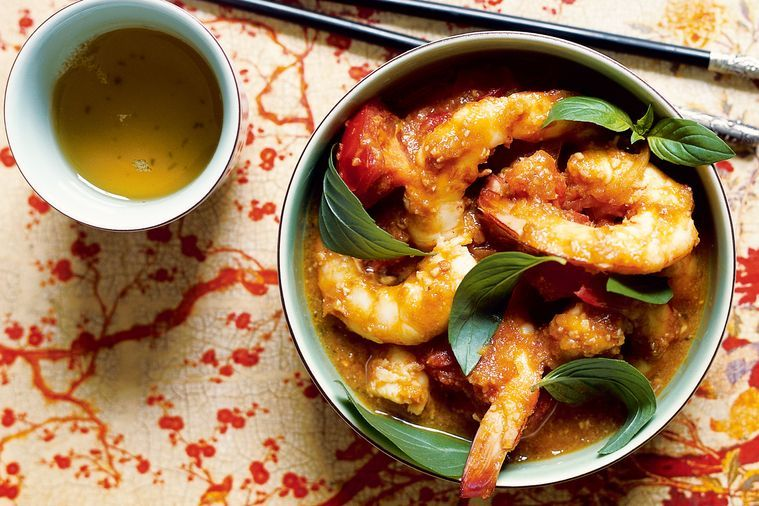

1 1/2 cups (300g) jasmine rice, rinsed well
1 cup (250ml) coconut milk
2 tablespoons sunflower oil
12 green prawns, peeled (tails intact), deveined
1 bunch water spinach (ong choy) or English spinach, leaves blanched
2 Lebanese cucumbers, sliced into strips
3 hard-boiled eggs, quartered
1/4 cup (35g) roasted peanuts
Coriander sprigs, to garnish
FRESH SAMBAL
2 long red chillies, sliced
2 garlic cloves
1/4 cup (60ml) sunflower oil
4 eschalots, thinly sliced
2 teaspoons brown sugar
1 teaspoon ground turmeric
2 tablespoons sambal oelek (chilli paste)
1 tablespoon tomato paste
2 tablespoons tamarind puree
1.Place rice in a saucepan with coconut milk, 1 cup (250ml) water and a pinch of salt. Bring to the boil, cover, reduce heat to low and simmer for 15 minutes until liquid is absorbed, then remove from the heat and rest, covered, for 5 minutes.
2.For the sambal, pound chillies and garlic to a rough paste in a mortar and pestle. Heat oil in a wok over medium heat and fry eschalots for 5 minutes until soft. Add garlic paste and fry for 2 minutes until fragrant. Add remaining ingredients with 1/2 teaspoon salt and 2 tablespoons water and stir-fry for 5 minutes until thick.
3.Heat oil in a frypan over medium-high heat. Cook prawns for 4 minutes until pink and serve with rice, spinach, cucumber, eggs, peanuts, coriander and sambal.

6 small eschalots, halved
4 garlic cloves
2 tablespoons chilli paste or sambal oelek
2 teaspoons shrimp paste or 4 anchovy fillets
6 macadamia nuts
2 tablespoons canola or sunflower oil
1 onion, thinly sliced
2 tablespoons tamarind concentrate
3 tablespoons grated palm sugar or raw sugar
1kg green king prawns, peeled (tails intact), deveined
2 large vine-ripened tomatoes, chopped
1 cup Thai basil leaves, to serve
/P>
1.Process eschalots and garlic in a food processor until finely chopped. Scrape down sides, add chilli and shrimp pastes, nuts and 2 tablespoons water. Process to combine.
2.Heat oil in a wok or deep frypan over medium-high heat. Add paste and onion and stir for 2-3 minutes until juices evaporate. Add 11/2 cups (375ml) boiling water, tamarind and sugar. Stir for 5 minutes or until sauce thickens slightly. Add prawns and tomatoes.
Cook for 8 minutes or until prawns are cooked through. Serve scattered with basil.

1.6kg chicken, jointed into 4 pieces (ask your butcher to do this for you)
1 tsp ground turmeric
100ml vegetable oil
600g desiree potatoes, cut into 5cm pieces
400ml can coconut milk
2 tbs tamarind paste, mixed with 1 cup (250ml) water
1 star anise
1 cinnamon stick
1 tbs palm sugar or brown sugar
Juice of 1/2 lime, plus wedges to serve
Thinly sliced red chilli, to serve
Fried shallots, to serve
Steamed rice, to serve
SPICED PASTE
6 dried whole chillies, soaked in hot water for 20 minutes, drained
1 lemongrass stalk, white part only, chopped
4cm piece (20g) galangal, peeled, chopped
5cm piece (25g) fresh turmeric, peeled, chopped
1 long red chilli, seeds removed, chopped
6 Asian (red) shallots, roughly chopped
2 garlic cloves, chopped
1 tsp shrimp paste
1/2 tsp freshly ground black pepper
1.Place chicken, turmeric and 1 tbs oil in a bowl and season with 1 tsp salt flakes and freshly ground black pepper. Toss to coat, then set aside for 30 minutes to marinate. For the spice paste, place all ingredients in a small food processor and whiz to a smooth paste. Set aside.
2.Heat remaining 1/3 cup (80ml) oil in a large heavy-based saucepan over medium-high heat.
3.Add the chicken and cook, turning halfway, for 4-5 minutes until golden brown. Transfer to a plate.
4.Reduce heat to medium-low and add spice paste. Cook, stirring, for 5-6 minutes until caramelised and fragrant. Return chicken to the pan, add potatoes and stir to combine. Add coconut milk, tamarind mixture, star anise and cinnamon and bring to a simmer. Reduce heat to low, cover with a lid, and simmer for 1 hour or until the chicken is tender. Season with sugar and lime juice.
5.Sprinkle with chilli and shallots. Serve with steamed rice and lime wedges.